集成开发环境 IDE
@2022-12-05- 基本概念 Concepts
VMware
- 下载 Download
- VMware Workstation 17 Pro
- 安装 Installation

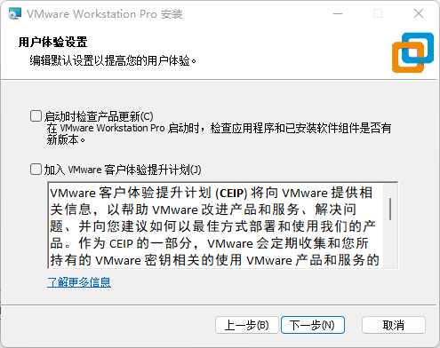
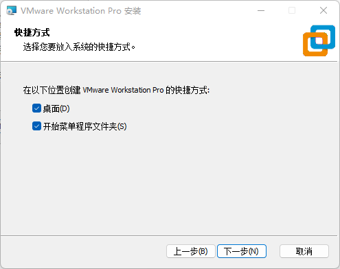
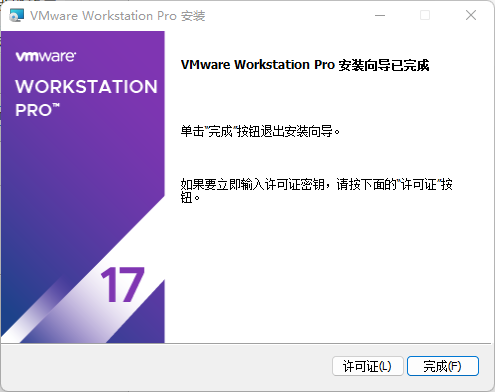
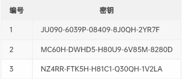
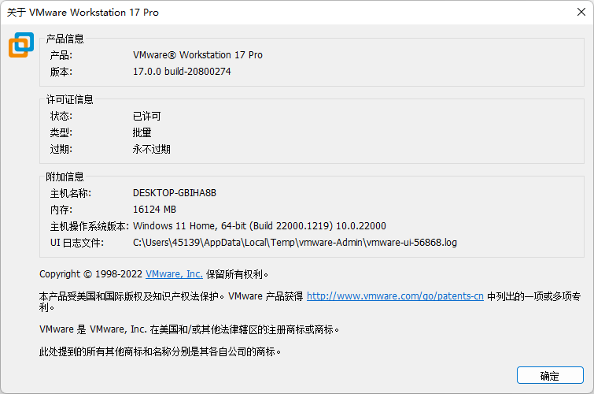
Ubuntu
- 下载 Download
- Ubuntu 22.04.1 LTS
- 安装 Installation
- 安装过程保持联网
- 安装过程大约持续10-20分钟
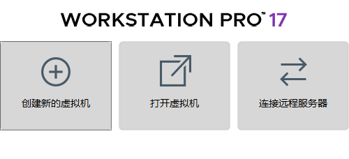
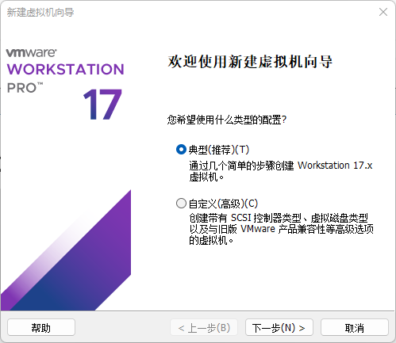
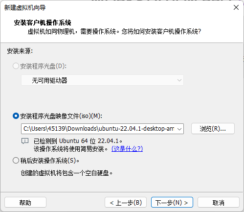
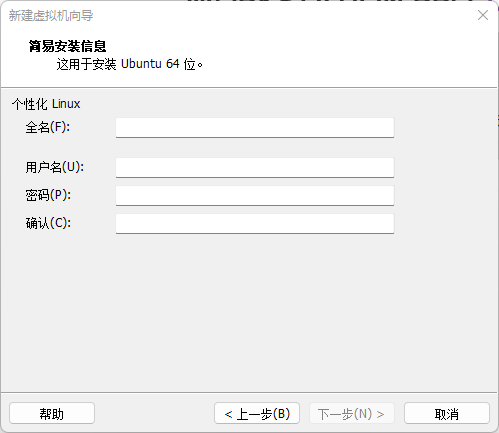
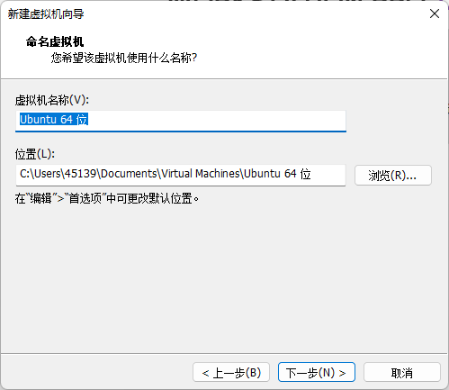
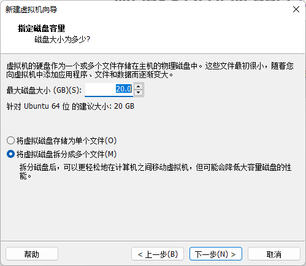
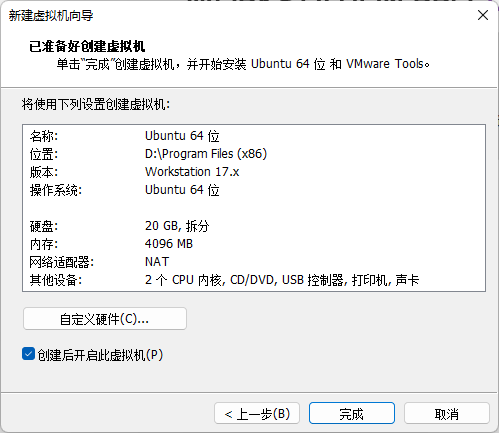
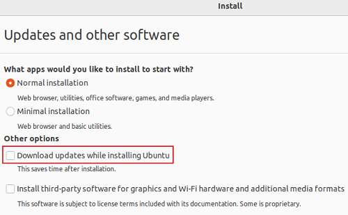
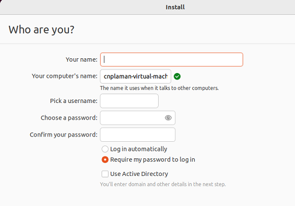